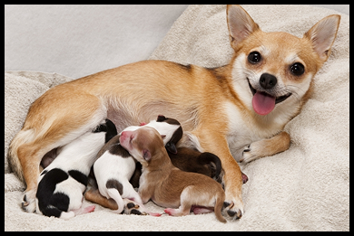
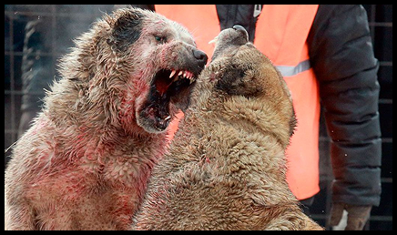
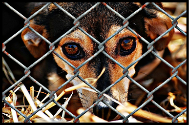

Bob foi resgatado em condições difíceis, magro e assustado, após ser abandonado em uma estrada. 😢 Com amor e cuidados, ele se recuperou e conquistou o coração de uma família incrível! 🏡💕 Hoje, vive feliz, correndo pelo quintal e recebendo muito carinho. 🐾✨ Sua adoção prova que todo animal merece uma segunda chance! 🌟 Adote e transforme uma vida! ❤️
Conheça a história da cachorra que pariu 25 filhotes e que já está gravida novamente.
Foi descobre um esquema envolvendo lutas de cachorros pela Acapra e a polícia chegou ao local e prendeu 3 suspeitos, entenda.
Conheça este resgate comovente que resgatou 10 cachorros na Limeira e encontrou novos lares para eles
